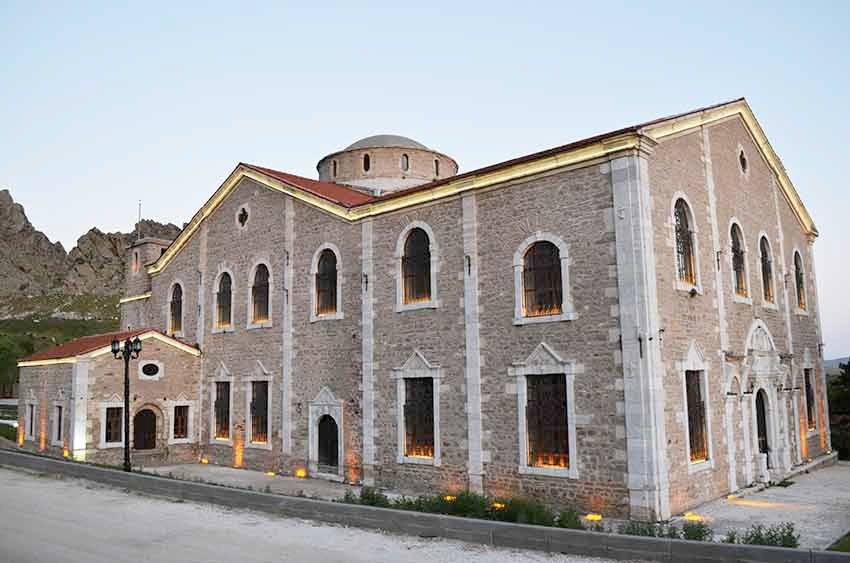
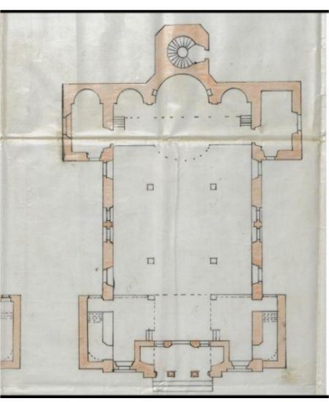
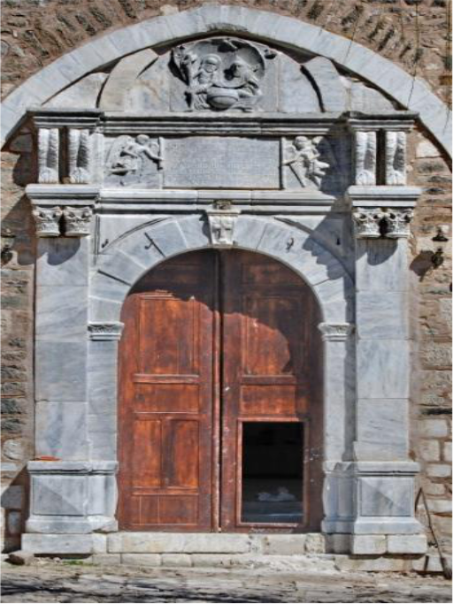

Surp Yerrortutyun Kilisesi
8 Haziran, 2026Eskişehir'in Sivrihisar ilçesinde bulunan Surp Yerrortutyun Kilisesi 1650 yılında inşa edilmiştir. Kilise 1876’da çıkan bir yangın sonucu zarar görmüştür. Neticesinde 1881 yılında Patrik Nerses Varjabedyan döneminde Mintes Panoyat tarafından yeniden inşası yapılmıştır. Yerrortutyun. Kilise Ermeni mahallesinin ortasında hamam ve saat kulesinin yanına yapılmıştır. Anadolu’da bulunan en büyük üç kiliseden biridir. [1]
Daha önceleri sinema olarak kullanılan kilise şu anda kültür evi olarak kullanılmaktadır. Yerrortutyun Ermenice’de “Kutsal Üçlü” anlamına gelmektedir.

Surp Yerrortutyun Kilisesi (Photo:Sivrihisar Belediyesi)
Kilisenin yazıtında ermenice “Cemaat üyelerinin yardımlarıyla kutsal üçlü (SURP YERRORTUTYUN) adına bir kilise inşa edildi. Patrik Nerses hükümranlığında, Sivrihisar’ın imanlı cemaati, Minteş Panoyat mimarın 1881’de unutulmaz eseri Surp Yerrortutyun Kilisesi inşa edildi.” yazmaktadır.[2]
Kilisenin iki yanında kızıl kesme taştan yapılan çan kuleleri bulunmaktadır. Bu yüzden kiliseye Kızıl Kilise de denilmektedir. Binanın kuzey, güney ve batı cephesinde bulunan 3 tane girişi vardır. Binanın batı cephesi, dört mermer plaster ile dikey olarak üç bölüme ayrılmıştır.

Surp Yerrortutyun Ermeni Kilisesi Planı, Cumhurbaşkanlığı Devlet Arşivinden alınmıştır, (Atıcı, 2021)
Kilisenin arka kısmında vaftiz odası, güney kısmında papaz odası bulunmakta. Kilisenin batı girişi süsleme açısından en dolu girişidir. Kapının üstündeki yarım daire kemeri oluşturan taşlar, yüzeyden alçalıp yükselerek kontrast oluşturarak hareket ettirilmiş ve kilit taşı yerden yükseltilerek yüzeyine kabartma bir haç motifi yerleştirilmiştir
Kuzey kapısının üstündeki üçgen alınlıkta 4 yapraklı yonca şeklinde bir pencere bulunmaktadır. İçerideki sütunlar renkli sıvalıdır. Apsisin her iki yanında, alçı başlıklarda beş yapraklı çiçek kabartmaları yer almaktadır. Her iki apsidyolde de kemer kilit taşı olarak mermerden yapılmış tek bir Malta haçı bulunmaktadır. Apsisin güney duvarında olması gereken haç yerinde değildir. Kubbe pandantiflerinde freskler vardır ve bunlardan ikisi günümüze ulaşmıştır. Daha çok zarar gören freskte sadece bir kitap ve kitabı tutan kişinin elleri görülebilmektedir. Apsisin kuzeyindeki nişe çeşitli haçlar oyulmuştur; Malta ve Yunan haçları görülebilir.Güney şapelinin batı duvarına yaslanmış iki yazıt bulunmaktadır. Taşlardan biri, bitki süslemelerinin arasında bir haç tutan bir melek tasvirli sarı mermerdir. Diğeri ise iki taşıyıcı arasında bir haç tasvirli gri mermerdir. Kuzey şapelindeki apsidiolün farklı bir işlevi vardır. Kuzey şapelindeki apsidiolde bir havuz ve çeşme bulunmaktadır. Burası vaftizhane olarak kullanılmaktadır. Vaftiz havuzu yarım daire şeklindedir ve kemerinde Ermenice yazıtlar bulunmaktadır.

Batı girişi (Photo: Denis Alyanak, 09.04.2023)
kitabe alanına kitabe ve rulo halindeki kitabeyi açan melekler yerleştirilmiştir. Bu bölümün üst kısmına ise iki tane kanatlı başın taşıdığı dairesel bir alanda tasvir edilen ve kutsal ruhu temsil eden bir güvercin ile bir küre üzerinde sakallı iki insan figürü kabartılmıştır. [3]
Kaynakça
- [1] Sivrihisar Belediyesi."Tarihi Surp Yerrortutyun Ermeni Kilisesi." Sivrihisar Belediyesi. Erişim tarihi 16 Ağustos 2025. https://sivrihisar.bel.tr/icerikler/19-tarihi-surp-yerrortutyun-ermeni-kilisesi.html
- [2] T.C. Kültür ve Turizm Bakanlığı Eskişehir İl Kültür ve Turizm Müdürlüğü. "Surp Yerrortutyun Ermeni Kilisesi (Sivrihisar)." Eskişehir Kültür ve Turizm Portalı. Erişim tarihi 16 Ağustos 2025. https://eskisehir.ktb.gov.tr/TR-347285/surp-yerrortutyun-ermeni-kilisesi-sivrihisar.html
- [3] Alyanak, D. (2024). The Archaeometric Analyses of Surp Yerrortutyun Armenian Church in Si̇vri̇hi̇sar, Eski̇şehi̇r (Master's thesis, Middle East Technical University (Turkey)).